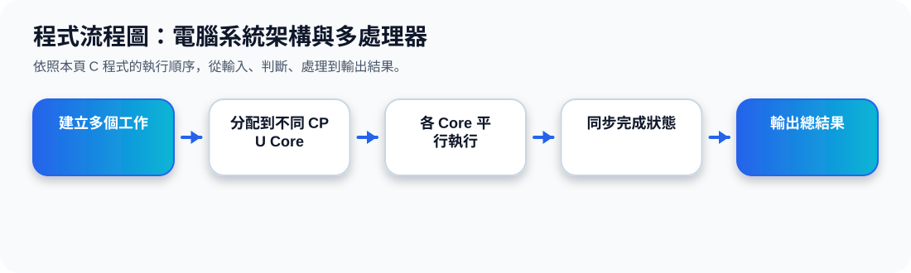

二、Computer-System Architecture：系統架構的基本分類
核心觀念 電腦系統可以依照 CPU 的數量與組織方式來分類。最簡單的是單一 general-purpose processor；較進階的是 multiprocessor systems，也就是多個 CPU 一起工作。
Single Processor
一顆主要 CPU 處理大部分工作。
Multiprocessor
多顆 CPU 共享記憶體與系統資源。
Dual-Core
一個晶片內放入兩個運算核心。
架構比較動畫
三、Multiprocessor Systems：為什麼要多處理器？
1、Increased Throughput
多顆處理器可以在同一段時間完成更多工作。雖然不一定會完全變成兩倍或三倍快，但整體處理量通常會提高。
2、Economy of Scale
多處理器可以共用記憶體、I/O 裝置與電源等資源，比每台機器各自獨立一套設備更有效率。
3、Reliability
當其中一個處理器出問題時，系統可能還能降低效能後繼續運作，這稱為 graceful degradation 或 fault tolerance。
四、Symmetric Multiprocessing Architecture：SMP 架構
SMP 是對稱式多處理架構。投影片中的圖顯示多個 CPU 各自有 registers 與 cache，但共同連到同一個 memory。重點是「所有 CPU 在地位上相近」，都可以執行作業系統與使用共享記憶體。
SMP 的理解方式
可以想像有多位工作人員一起處理任務，每位工作人員都有自己的桌面工具，也能共同存取同一個資料櫃。這樣可以讓系統同時處理更多工作，但也需要 OS 做好同步與資源管理。
五、Dual-Core Design：雙核心設計
Dual-Core 是把兩個 computing cores 放在同一個晶片上。每個 core 有自己的 registers，也通常有 local cache，兩者再共同連接到 memory。
和多處理器的相同點
都可以讓系統同時處理更多工作，也都需要作業系統進行排程與資源分配。
和多處理器的差異
多核心通常是在同一晶片內放多個 core；多處理器則可能是多顆獨立 CPU。多核心能降低晶片間溝通成本，現在非常常見。
簡單記法：Multiprocessor 是「多顆處理器」；Multicore 是「一顆晶片裡有多個核心」。
程式流程圖與流程講解
程式流程圖：電腦系統架構與多處理器

流程講解
可編輯 C 程式範例與線上編輯器
可編輯 C 程式：電腦系統架構與多處理器
這段程式依照上方流程圖設計，包含中文註解，適合貼到線上編輯器直接執行與修改。
程式題目完整教學內容
程式題目完整教學：電腦系統架構與多處理器
一、程式題目講解
用工作量陣列模擬多核心 CPU 如何分配工作。
核心觀念是多處理器與負載分配，透過 i % 4 將 8 個工作輪流分配到 4 個核心。
二、完整程式碼
以下程式碼可直接複製到 C 語言線上編譯器執行。程式中已加入中文註解，說明主要變數、判斷流程與輸出目的。
#include <stdio.h>
/*
主題 3：電腦系統架構與多處理器
功能：用陣列模擬多核心 CPU 分配工作。
*/
int main(void) {
int tasks[8] = {12, 7, 9, 4, 10, 6, 5, 3};
int coreLoad[4] = {0};
int i;
for (i = 0; i < 8; i++) {
int core = i % 4; // 簡單輪流分配到 4 個核心
coreLoad[core] += tasks[i];
printf("Task %d 分配到 Core %d，工作量=%d\n", i + 1, core, tasks[i]);
}
printf("\n各核心總工作量：\n");
for (i = 0; i < 4; i++) {
printf("Core %d：%d\n", i, coreLoad[i]);
}
return 0;
}三、程式執行結果
Task 1 分配到 Core 0，工作量=12
Task 2 分配到 Core 1，工作量=7
Task 3 分配到 Core 2，工作量=9
Task 4 分配到 Core 3，工作量=4
Task 5 分配到 Core 0，工作量=10
Task 6 分配到 Core 1，工作量=6
Task 7 分配到 Core 2，工作量=5
Task 8 分配到 Core 3，工作量=3
各核心總工作量：
Core 0：22
Core 1：13
Core 2：14
Core 3：7結果說明：核心觀念是多處理器與負載分配，透過 i % 4 將 8 個工作輪流分配到 4 個核心。 程式依照設定的資料與控制流程逐步輸出，因此可以從結果看到每個步驟的執行順序與狀態變化。
四、程式流程圖與流程圖說明
本頁上方已提供對應的程式流程圖，圖中以「開始、資料設定、條件判斷、重複處理、輸出結果、結束」呈現程式執行順序。
程式先建立工作量與核心負載陣列，接著逐一分派工作並累加各核心負載，最後輸出每個核心總工作量。
五、重要函數與語法說明
陣列 tasks[] 儲存各工作量；coreLoad[] 記錄每個核心負載；% 取餘數用來輪流分配核心；for 迴圈處理所有工作。
六、整體說明
本題的學習重點是把作業系統概念轉成可觀察的 C 程式流程。學生應先理解題目概念，再對照程式碼、流程圖與執行結果，掌握變數設定、條件判斷、迴圈處理與輸出結果之間的關係。